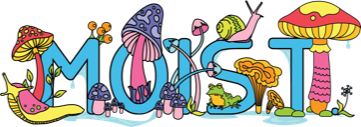
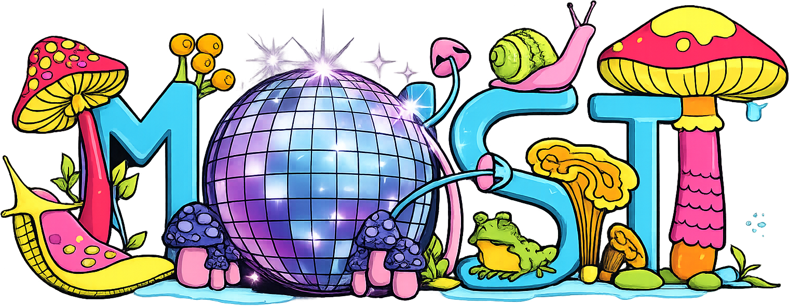

Built by one Silly Goose → .
This is a fork → of Isaiiaas/OtherworldWWW →.
To have your events displayed here, add them to the shared spreadsheet →.
Music lineup courtesy of Dancing Decibels →.
This website is not affiliated with Kindle Arts Society or Otherworld.
Keep a copy of this code (or save it as a file) so you can restore later.
Restoring merges with any favorites you already have on this device — nothing is deleted.
otherworld-favorites-*.json